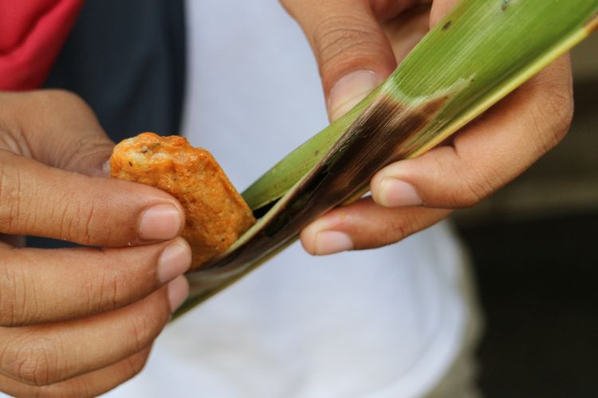
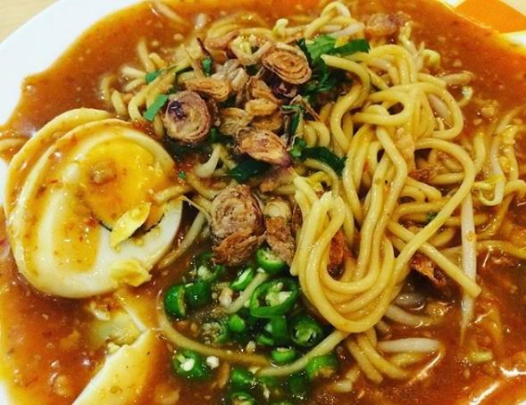

Gonggong adalah sejenis kerang
yang hanya bisa ditemukan di Pulau Sumatera,
khususnya di Tanjung Pinang. Bentuknya seperti siput,
dengan cangkang berwarna putih.
2. Otak Otak

Otak-otak khas Tanjung Pinang berbeda dengan otak-otak lainnya.
Memiliki tiga macam varian pada umumnya,
yaitu otak-otak original dengan daging ikan saja,
otak-otak pedas yang berwarna merah,
dan otak-otak pedas dengan campuran daging sotong.
3. Mi Lendir

Mi Lendir merupakan salah satu makanan khas Tanjung Pinang
yang cukup mudah ditemukan di beberapa warung di penjuru kota.
Disebut mi lendir karena kuah mi yang sangat kental hingga menyerupai lendir.
Rasanya sendiri cukup nikmat, ada perpaduan gurih dan manis yang pas.
Tentang
Tanjung Pinang adalah ibukota Kepulauan Riau.
Posisi
Provinsi ini termasuk provinsi kepulauan di Indonesia.
Transportasi
Anda dapat berkunjung ke Kepulauan Riau melalui berbagai jenis transportasi, baik darat, laut, maupun udara